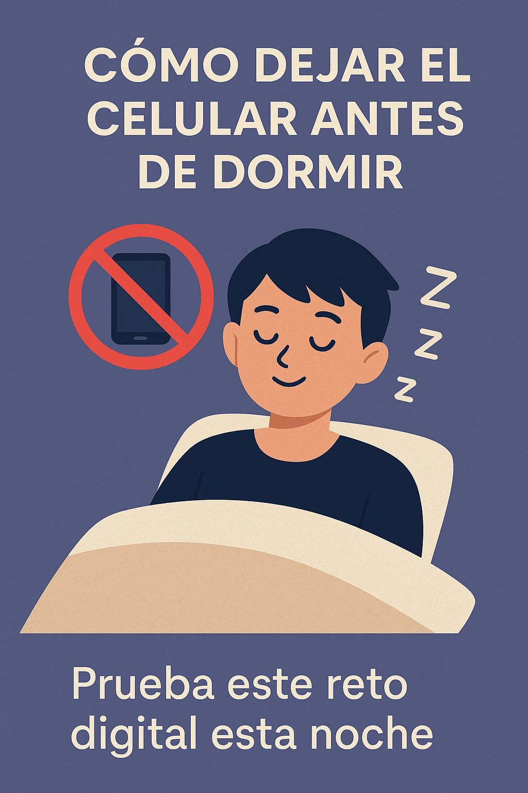

Cómo dejar el celular antes de dormir: 15 pasos efectivos para un sueño profundo
Introducción: ¿Por qué es tan difícil dejar el celular antes de dormir?
¿Te pasa que dices “solo 5 minutos más” y terminas revisando redes hasta tarde? Dejar el celular antes de dormir es uno de los mayores retos digitales. Hoy descubrirás cómo romper este ciclo y recuperar noches de descanso real.
Impacto del uso del celular en el sueño y la salud mental
Luz azul y melatonina: lo que no sabías
Las pantallas emiten luz azul que inhibe la melatonina, la hormona que regula el sueño. Si quieres conocer técnicas para contrarrestar esto, revisa nuestra Guía de Respiración.
Estimulación mental y sobrepensamiento
Revisar el móvil activa tu mente y alimenta pensamientos repetitivos. Aquí tienes más recursos en Cómo dejar de sobrepensar antes de dormir.
Ansiedad digital y dopamina
El celular dispara dopamina que engancha a tu cerebro. Saberlo es clave para entender por qué cuesta tanto soltarlo.
Cómo dejar el celular antes de dormir: Estrategias prácticas
1️⃣ Establece una hora límite digital
Define una hora para apagarlo cada noche y cúmplelo.
2️⃣ Crea un ritual nocturno sin pantallas
Lee, escribe o toma una infusión relajante.
3️⃣ Configura el modo nocturno y bloqueo de apps
Activa el modo “No molestar” y usa apps bloqueadoras.
4️⃣ Deja el cargador fuera de la habitación
Así evitas revisarlo de madrugada.
5️⃣ Usa despertadores analógicos
Elimina la excusa de tenerlo cerca por la alarma.
6️⃣ Sustituye el scroll por lectura ligera
Un libro físico siempre gana a una pantalla.
7️⃣ Practica respiración y meditación
Relájate con nuestra Guía de Meditación.
8️⃣ Escribe en tu Journal nocturno
Vacía la mente antes de dormir con el Journal para la ansiedad.
9️⃣ Diseña tu rincón de paz
Crea un espacio sin pantallas. Mira cómo en Rincón de Paz en Casa.
🔟 Súmate a un reto de 7 noches sin celular
Prueba este reto digital esta noche y nota la diferencia.
Herramientas tecnológicas para ayudarte a dejar el móvil
Apps de control de tiempo y bloqueadores de pantalla
Descarga apps como *Forest* o *Freedom*.
Luz nocturna y filtros de luz azul
Activa el modo noche y usa filtros especiales.
Beneficios reales de dejar el celular antes de dormir
Mejora de la calidad del sueño
Mayor energía al despertar
Reducción de estrés y ansiedad nocturna
Preguntas frecuentes sobre cómo dejar el celular antes de dormir
- ¿Qué hago si necesito alarma? Compra un despertador.
- ¿Puedo leer en el móvil? Mejor libro físico o Kindle sin luz azul.
- ¿Cuándo apagarlo? Al menos 1 hora antes de dormir.
- ¿Qué hacer si despierto? Respira y no lo enciendas.
- ¿Trabajo con el móvil? Organiza tareas antes.
- ¿Qué hago si me aburro? Practica Mindfulness Diario.
Conclusión
Ahora sabes cómo dejar el celular antes de dormir. Toma acción esta noche y regálate un descanso profundo.
